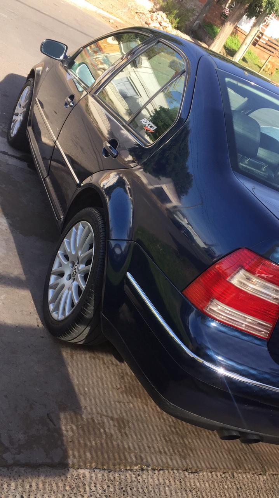

Imagenes
Auto

Yasuo
Picture(cambia con el zoom, tamaño)
Figure, me agrega una descripcion de la imagen con el fig caption
Fig.1 - Auto, bora, 1.8t.
El navegador no soporta el video.
El navegador no soporta el archivo.
Multimedia
Lucas moy python
Este es un mapa de google compartido como iframe